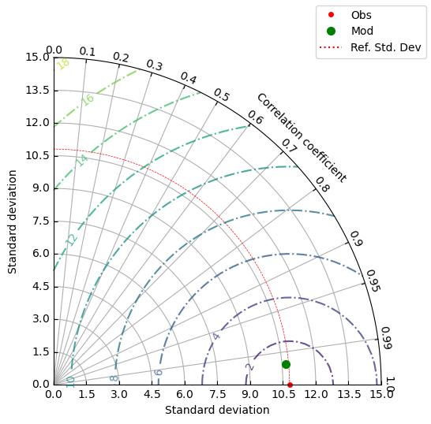

Load Data#
import os
import xarray as xr
import pandas as pd
import numpy as np
import gsw
Model#
dir_mod = '/data/local/marine-training/data/MATPEL_05/cawo_out'
paths_mod = []
for file in os.listdir(dir_mod):
if file.endswith('nc') and 'cawo' in file:
paths_mod.append(os.path.join(dir_mod, file))
paths_mod.sort()
ds_mod = xr.open_mfdataset(paths_mod, chunks='auto')
Argo#
path_argo_nc = '/data/local/marine-training/data/MATPEL_05/argo_data/nc_argo/GL_PR_PF_2902800.nc'
ds_argo = xr.open_dataset(path_argo_nc)
Drifter#
path_drifter_csv = '/data/local/marine-training/data/MATPEL_05/drifter_data/drifter_6hour_qc_f5dd_5de7_fd9d.csv'
df_drifter = pd.read_csv(path_drifter_csv)
Verifikasi#
Verifikasi menggunakan data Argo float#
Menyeleksi Data Berdasarkan QC dan Wilayah Indonesia#
ds_argo_filtered = (ds_argo
.where(ds_argo['PRES_ADJUSTED_QC'] == 1)
.where(ds_argo['TEMP_ADJUSTED_QC'] == 1)
.where(ds_argo['PSAL_ADJUSTED_QC'] == 1)
)
t_start = pd.to_datetime("2024-02-01")
t_end = pd.to_datetime("2025-03-31")
ext_indo = [90, 145, -15, 15]
# 1. Mengambil nilai dari dimensi
lat = ds_argo_filtered['LATITUDE'].values
lon = ds_argo_filtered['LONGITUDE'].values
tm = pd.to_datetime(ds_argo_filtered['TIME'].values)
# 2. Buat mask lokasi: hanya posisi dalam batas wilayah Indonesia
mask_pos = (lon >= ext_indo[0]) & (lon <= ext_indo[1]) & (lat >= ext_indo[2]) & (lat <= ext_indo[3])
# 3. Buat mask waktu: hanya waktu dalam rentang yang ditentukan
mask_tm = (tm >= t_start) & (tm <= t_end)
# 4. Gabungkan kedua mask (lokasi dan waktu)
mask_combined = mask_pos & mask_tm
# 5. Indeks data yang lolos seleksi
valid_indices = np.where(mask_combined)[0]
# print(f"Indeks/cycle yang lolos seleksi: {valid_indices}")
ds_argo_filtered = ds_argo_filtered.sel(TIME=mask_combined, LATITUDE=mask_combined, LONGITUDE=mask_combined, POSITION=valid_indices)
ds_argo_filtered['POSITION'] = ('TIME', ds_argo['POSITION'].values[valid_indices])
ds_argo_filtered
<xarray.Dataset> Size: 2MB
Dimensions: (TIME: 60, DEPTH: 103, POSITION: 60,
LATITUDE: 60, LONGITUDE: 60)
Coordinates:
* TIME (TIME) datetime64[ns] 480B 2024-02-05T01:30:26 ...
* LATITUDE (LATITUDE) float32 240B 4.764 4.568 ... 4.038
* LONGITUDE (LONGITUDE) float32 240B 130.1 129.8 ... 131.1
POSITION (TIME) int64 480B 159 160 161 162 ... 216 217 218
Dimensions without coordinates: DEPTH
Data variables: (12/23)
TIME_QC (TIME, DEPTH) float32 25kB 1.0 1.0 1.0 ... nan nan
POSITION_QC (POSITION, TIME, DEPTH) float32 1MB 1.0 ... nan
DC_REFERENCE (TIME, DEPTH) object 49kB b'93359759' ... nan
DIRECTION (TIME, DEPTH) object 49kB b'A' b'A' ... nan nan
VERTICAL_SAMPLING_SCHEME (TIME, DEPTH) object 49kB b'Synthetic sampling'...
PRES (TIME, DEPTH) float32 25kB 0.0 0.6 1.9 ... nan nan
... ...
PSAL (TIME, DEPTH) float64 49kB 34.02 34.06 ... nan nan
PSAL_QC (TIME, DEPTH) float32 25kB 1.0 1.0 1.0 ... nan nan
PSAL_ADJUSTED (TIME, DEPTH) float64 49kB 34.02 34.06 ... nan nan
PSAL_ADJUSTED_QC (TIME, DEPTH) float32 25kB 1.0 1.0 1.0 ... nan nan
PSAL_ADJUSTED_DM (TIME, DEPTH) object 49kB b'D' b'D' ... nan nan
PSAL_ADJUSTED_ERROR (TIME, DEPTH) float64 49kB 0.009 0.009 ... nan nan
Attributes: (12/49)
data_type: OceanSITES vertical profile
format_version: 1.4
platform_code: 2902800
institution: First Institute of Oceanography - Ministr...
institution_edmo_code: 4640
site_code:
... ...
last_date_observation: 2025-04-05T01:30:25Z
last_latitude_observation: 4.24300
last_longitude_observation: 130.82900
date_update: 2025-04-15T09:50:18Z
history: 2025-04-15T09:50:18Z : Creation
data_mode: MMenyeleksi berdasarkan dimensi model#
# Ambil data
pressure = ds_argo_filtered["PRES_ADJUSTED"].values # (n_profile, n_levels)
latitude = ds_argo_filtered["LATITUDE"].values # (n_profile,)
longitude = ds_argo_filtered["LONGITUDE"].values # (n_profile,)
temperature = ds_argo_filtered["TEMP_ADJUSTED"].values # (n_profile, n_levels)
salinity = ds_argo_filtered['PSAL_ADJUSTED'].values # (n_profile, n_levels)
# Target kedalaman yang ingin diambil
target_depths = np.abs(ds_mod.depth.values)
# Konversi tekanan ke kedalaman per profil
n_profiles = pressure.shape[0]
depth = np.empty_like(pressure)
for i in range(n_profiles):
depth[i, :] = -gsw.z_from_p(pressure[i, :], latitude[i])
# Fungsi untuk ambil nilai variabel di kedalaman terdekat
def get_nearest_profile_values(var, depth_arr, target_depths):
result = []
for prof_idx in range(var.shape[0]):
prof_values = []
for td in target_depths:
# Hanya pertimbangkan nilai yang tidak NaN
valid_indices = ~np.isnan(depth_arr[prof_idx]) & ~np.isnan(var[prof_idx])
if not np.any(valid_indices):
prof_values.append(np.nan) # Jika semua nilai NaN, tambahkan NaN
continue
valid_depth = depth_arr[prof_idx][valid_indices]
valid_var = var[prof_idx][valid_indices]
# Temukan indeks dengan nilai kedalaman terdekat
idx = (np.abs(valid_depth - td)).argmin()
prof_values.append(valid_var[idx])
result.append(prof_values)
return np.array(result)
# Ambil suhu pada kedalaman target
temp_at_target_depths = get_nearest_profile_values(temperature, depth, target_depths)
sali_at_target_depths = get_nearest_profile_values(salinity, depth, target_depths)
press_at_target_depths = get_nearest_profile_values(pressure, depth, target_depths)
# Buat dataframe untuk suhu pada kedalaman target
df_temp_at_model_depths = pd.DataFrame(temp_at_target_depths, columns=target_depths)
df_sali_at_model_depths = pd.DataFrame(sali_at_target_depths, columns=target_depths)
df_press_at_model_depths = pd.DataFrame(press_at_target_depths, columns=target_depths)
Mengkonversi nilai temperatur in-situ menjadi temperatur potensial#
# Ambil suhu, salinitas, dan tekanan dari DataFrame
temp = df_temp_at_model_depths.values # (n_profiles, n_depths)
sali = df_sali_at_model_depths.values # (n_profiles, n_depths)
press = df_press_at_model_depths.values # (n_profiles, n_depths)
# Ambil latitude dan longitude dari profil
latitude = ds_argo_filtered["LATITUDE"].values # (n_profiles,)
longitude = ds_argo_filtered["LONGITUDE"].values # (n_profiles,)
# Ukuran
n_profiles, n_depths = temp.shape
# Perluas latitude dan longitude agar sesuai shape (n_profiles, n_depths)
lat_2d = np.repeat(latitude[:, np.newaxis], n_depths, axis=1)
lon_2d = np.repeat(longitude[:, np.newaxis], n_depths, axis=1)
# Konversi ke Absolute Salinity (dari Practical Salinity)
SA = gsw.SA_from_SP(sali, press, lon_2d, lat_2d)
# Hitung Potential Temperature (referensi ke permukaan laut, 0 dbar)
pt = gsw.pt_from_t(SA, temp, press, p_ref=0)
# Buat DataFrame hasil
df_pt_at_model_depths = pd.DataFrame(pt, columns=target_depths)
df_pt_at_model_depths['TIME'] = pd.to_datetime(ds_argo_filtered['TIME'].values)
df_pt_at_model_depths.set_index('TIME', inplace=True)
df_pt_at_model_depths = df_pt_at_model_depths.transpose()
df_pt_at_model_depths.index.name = 'Depth (m)'
df_pt_at_model_depths.columns.name = 'Time'
Ambil data model#
# Ekstrak Data model berdasarkan lat/lon/time data obs
latitude = ds_argo_filtered['LATITUDE'].values
longitude = ds_argo_filtered['LONGITUDE'].values
argo_time = pd.to_datetime(ds_argo_filtered['TIME'].values)
mod_temps_val = []
for i, dt in enumerate(argo_time):
argLat = latitude[i]
argLon = longitude[i]
ds0 = ds_mod.sel(date=dt, lat=argLat, lon=argLon, method='nearest')
mod_temps_val.append(ds0['sw_temp'].values)
# Buat dataframe untuk suhu pada kedalaman target dari data model
df_pt_mod = pd.DataFrame(mod_temps_val, columns=np.abs(ds_mod.depth.values))
df_pt_mod['TIME'] = argo_time
df_pt_mod.set_index('TIME', inplace=True)
df_pt_mod = df_pt_mod.transpose()
df_pt_mod.index.name = 'Depth (m)'
df_pt_mod.columns.name = 'Time'
---------------------------------------------------------------------------
KeyboardInterrupt Traceback (most recent call last)
Cell In[8], line 12
10 argLon = longitude[i]
11 ds0 = ds_mod.sel(date=dt, lat=argLat, lon=argLon, method='nearest')
---> 12 mod_temps_val.append(ds0['sw_temp'].values)
14 # Buat dataframe untuk suhu pada kedalaman target dari data model
15 df_pt_mod = pd.DataFrame(mod_temps_val, columns=np.abs(ds_mod.depth.values))
File /opt/conda/envs/ofs/lib/python3.13/site-packages/xarray/core/dataarray.py:815, in DataArray.values(self)
802 @property
803 def values(self) -> np.ndarray:
804 """
805 The array's data converted to numpy.ndarray.
806
(...) 813 to this array may be reflected in the DataArray as well.
814 """
--> 815 return self.variable.values
File /opt/conda/envs/ofs/lib/python3.13/site-packages/xarray/core/variable.py:516, in Variable.values(self)
513 @property
514 def values(self) -> np.ndarray:
515 """The variable's data as a numpy.ndarray"""
--> 516 return _as_array_or_item(self._data)
File /opt/conda/envs/ofs/lib/python3.13/site-packages/xarray/core/variable.py:302, in _as_array_or_item(data)
288 def _as_array_or_item(data):
289 """Return the given values as a numpy array, or as an individual item if
290 it's a 0d datetime64 or timedelta64 array.
291
(...) 300 TODO: remove this (replace with np.asarray) once these issues are fixed
301 """
--> 302 data = np.asarray(data)
303 if data.ndim == 0:
304 kind = data.dtype.kind
File /opt/conda/envs/ofs/lib/python3.13/site-packages/dask/array/core.py:1724, in Array.__array__(self, dtype, copy, **kwargs)
1717 if copy is False:
1718 warnings.warn(
1719 "Can't acquire a memory view of a Dask array. "
1720 "This will raise in the future.",
1721 FutureWarning,
1722 )
-> 1724 x = self.compute()
1726 # Apply requested dtype and convert non-numpy backends to numpy.
1727 # If copy is True, numpy is going to perform its own deep copy
1728 # after this method returns.
1729 # If copy is None, finalize() ensures that the returned object
1730 # does not share memory with an object stored in the graph or on a
1731 # process-local Worker.
1732 return np.asarray(x, dtype=dtype)
File /opt/conda/envs/ofs/lib/python3.13/site-packages/dask/base.py:373, in DaskMethodsMixin.compute(self, **kwargs)
349 def compute(self, **kwargs):
350 """Compute this dask collection
351
352 This turns a lazy Dask collection into its in-memory equivalent.
(...) 371 dask.compute
372 """
--> 373 (result,) = compute(self, traverse=False, **kwargs)
374 return result
File /opt/conda/envs/ofs/lib/python3.13/site-packages/dask/base.py:681, in compute(traverse, optimize_graph, scheduler, get, *args, **kwargs)
678 expr = expr.optimize()
679 keys = list(flatten(expr.__dask_keys__()))
--> 681 results = schedule(expr, keys, **kwargs)
683 return repack(results)
File /opt/conda/envs/ofs/lib/python3.13/queue.py:202, in Queue.get(self, block, timeout)
200 elif timeout is None:
201 while not self._qsize():
--> 202 self.not_empty.wait()
203 if self.is_shutdown and not self._qsize():
204 raise ShutDown
File /opt/conda/envs/ofs/lib/python3.13/threading.py:359, in Condition.wait(self, timeout)
357 try: # restore state no matter what (e.g., KeyboardInterrupt)
358 if timeout is None:
--> 359 waiter.acquire()
360 gotit = True
361 else:
KeyboardInterrupt:
Hitung parameter verifikasi#
# Verifikasi temperatur potensial:
from mods import verification_metrics
metrics_verif_temp = verification_metrics(df_pt_at_model_depths, df_pt_mod)
print("Verifikasi Suhu:")
for k, v in metrics_verif_temp.items():
print(f"{k}: {v:.3f}")
Verifikasi Suhu:
Correlation: 0.996
MAPE (%): 4.088
Bias: -0.070
RMSE: 1.019
Std Obs: 10.804
Std Model: 10.685
Verifikasi menggunakan data Drifter#
Menyeleksi data drifter#
# Data sudah terseleksi saat akuisisi, hanya perlu menyesuaikan format data dan merapihkan data tabel
# Ambil baris pertama sebagai header yang benar
new_header = np.asarray(df_drifter.columns)
df_drifter_adjs = df_drifter[1:]
df_drifter_adjs.columns = new_header
# Drop rows dengan ID, latitude, atau longitude kosong
df_drifter_adjs = df_drifter_adjs.dropna(subset=["ID", "latitude", "longitude"])
# Konversi tipe data yang diperlukan
df_drifter_adjs["ID"] = df_drifter_adjs["ID"].astype(int)
df_drifter_adjs["latitude"] = df_drifter_adjs["latitude"].astype(float)
df_drifter_adjs["longitude"] = df_drifter_adjs["longitude"].astype(float)
df_drifter_adjs["time"] = pd.to_datetime(df_drifter_adjs["time"], format="%Y-%m-%dT%H:%M:%SZ")
df_drifter_adjs["start_date"] = pd.to_datetime(df_drifter_adjs["start_date"], format="%Y-%m-%dT%H:%M:%SZ")
df_drifter_adjs["deploy_date"] = pd.to_datetime(df_drifter_adjs["deploy_date"], format="%Y-%m-%dT%H:%M:%SZ")
df_drifter_adjs["end_date"] = pd.to_datetime(df_drifter_adjs["end_date"], format="%Y-%m-%dT%H:%M:%SZ")
df_drifter_adjs["drogue_lost_date"] = pd.to_datetime(df_drifter_adjs["drogue_lost_date"], format="%Y-%m-%dT%H:%M:%SZ")
# Ambil ID unik
unique_ids = df_drifter_adjs["ID"].unique()
Memilih data berdasarkan ID#
df_drifter2verif = df_drifter_adjs.loc[df_drifter_adjs['ID'] == 300234061473430][['ID', 'time', 'latitude', 'longitude', 'sst']]
df_drifter2verif['time'] = pd.to_datetime(df_drifter2verif['time']).dt.normalize() # Atau .dt.strftime('%Y-%m-%d')
df_drifter2verif.set_index(['time'], inplace=True)
Ambil data model#
# Ekstrak Data model berdasarkan lat/lon/time data drifter
lons, lats = df_drifter2verif['longitude'].values, df_drifter2verif['latitude'].values
drf_time = pd.to_datetime(df_drifter2verif.index.values)
mod_temps_val = []
mod_tms = []
for i, dt in enumerate(drf_time):
drfLat = lats[i]
drfLon = lons[i]
ds0 = ds_mod.sel(date=dt.strftime('%Y-%m-%d'), depth=0., lat=drfLat, lon=drfLon, method='nearest')
mod_temps_val.append(ds0['sw_temp'].values)
mod_tms.append(ds0.date.values)
# Buat dataframe untuk suhu pada kedalaman target dari data model
df_mod_temp = pd.DataFrame(
data={
'time': pd.to_datetime(mod_tms),
'latitude': lats,
'longitude': lons,
'sst': mod_temps_val
}
)
df_mod_temp.set_index(['time'], inplace=True)
df_drifter2verif['sst'] = df_drifter2verif['sst'].astype(float)
df_mod_temp['sst'] = df_mod_temp['sst'].astype(float)
metrics_verif_temp_drifter = verification_metrics(df_drifter2verif, df_mod_temp)
print("Verifikasi Suhu:")
for k, v in metrics_verif_temp_drifter.items():
print(f"{k}: {v:.3f}")
Verifikasi Suhu:
Correlation: 1.000
MAPE (%): 0.632
Bias: 0.184
RMSE: 0.392
Std Obs: 66.363
Std Model: 66.299
Visualisasi hasil verifikasi#
Membuat Taylor Diagram untuk visualisasi verifikasi Model dan Argo#
from mods import TaylorDiagram
from matplotlib.lines import Line2D
import matplotlib.pyplot as plt
ccorr = 0.996
stdv_mod = 10.685
stdv_arg = 10.804
fig = plt.figure(figsize=(5.5,5.5))
dia = TaylorDiagram(stdv_arg, fig=fig, rect=111, label='', grid=True)
dia.add_sample(stdv_arg, 1, label="Obs", marker=".", ls="", mec="red", mfc="red", mew=2)
dia.add_sample(stdv_mod, ccorr, label=f"Mod", marker="o", ls="", mfc="green", mec="none", markersize=8)
ref_line = Line2D([0], [0], color="red", linestyle=":")
handles = dia.samplePoints + [ref_line]
labels = [p.get_label() for p in dia.samplePoints] + ["Ref. Std. Dev"]
fig.legend(handles[1:], labels[1:], numpoints=1, prop=dict(size="medium"))
contours = dia.add_contours()
plt.clabel(contours, inline=1, fontsize=10)
plt.show()
